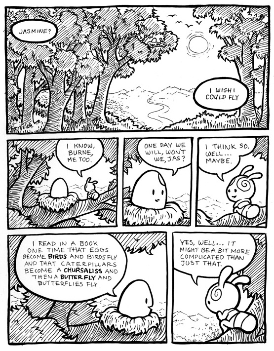

Chapter 5
Serial Metamorphosis
- ---o=O=o--- -

- --o=o-- -
I've always been fascinated by metamorphosis in nature. In my second year of college, as I was coming to terms with my inability to fulfill the only possible role I had been prepared for—the life of a Godly Christian man—I wrote a comic called How You Like Your Eggs. In this comic, the main characters are a caterpillar and a bird's egg, who undergo their respective metamorphoses. The caterpillar becomes a butterfly, but the egg (my self-insert) merely cracks apart, rather than "becoming" the bird. I felt that my grand metamorphosis had failed, that the only difference was the loss of hope for my potential future that I had once incubated inside of me.
Thankfully, that wasn't the end. I've had so many more opportunities to see something in the world and to incorporate it into what was once an empty center. It's a long road to building a new self—an endless road, if I'm lucky. The "right" answers can seem so obvious in retrospect, it can be tempting to flatten the journey, to mistake as inevitable the path that led me to this moment. I want to remember the precarity, the preciousness of what I've gained.